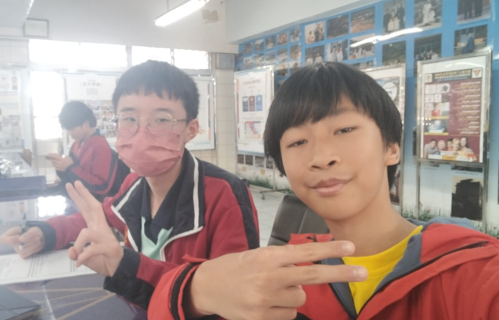
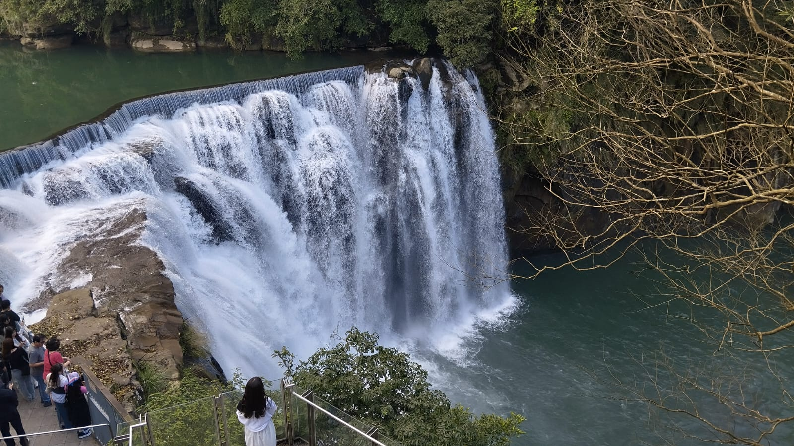

In a school Educational trip (Edutrip) me and some of my friends had the chance to go to Taiwan! Now because there were a lot of people, we were going to be split into 3 groups: Keelung, Hualien, Kaoshuing. Each going to thier respective cities. I was in the Keelung group.
After the Edutrip we were asked to do work on a few subjects in school. You can navigate to them above.
The first location we went to in Taiwan was the Holy Family catholic church. We attended a mass at the church and then left to go to the second location that is the National Palace museum. Here, they commemorate and show the History of Taiwan or rather where it used to be, in now modern day China. I bought a fan and a cool white cabage keychain. Now for the 3rd location, I went to Chiang Kai-Shek memorial hall. They commemorate thier former leader in the civil war, Chiang Kai-Shek. They have a Giant statue of him in the hall, facing to China symbolising how he will return to China.
Next up we went to the Taipei MRT through Chiang Kai-Shek memorial hall to Ximending night market where we bougt our own food and spent the night, me and my friend ate at a Hong-kong style restoraunt. After that we ended the day off and checked in at a hotel.
The next day, we went to Sacred Heart school in Keelung, there we met our buddy for the Edutrip. We played some games and presented together. After we went to Shifen waterfall where I took some pictures and Shifen old street where I bought some food and souveniers. We then got back to the same hotel to stay for the night.
On the 4th day, we went back to Sacred Heart school in Keelung. Where we went with our buddies to do comunity service at Ren-Ai Senior Citizen's Home, we did some activities with the elderly and then left to eat lunch.
After we ate lunch we went to the Kuosheng Nuclear Power Plant, this powerplant was discontinued and turned into a musuem where we learn how electricity is made from nuclear energy. Then we went to Jiufen old street which is on a mountain where we bought more food and souveniers. And lastly we ate dinner and gambled for a Gengar plushie in Keelung night market. (we never got the plush 😔)
The next day we went back to Sacred Heart school for the 3rd and last time we said our goodbyes, exchanged gifts, and went to the 921 earthquake museum. The 921 earthquake was a earthquake of magnitude 7.2 that happened on September, 21, 1999 in central Taiwan. It caused massive casualties and property damage, the museum was built to commemorate the event so that nothing of the same damage and casualties can ever happen again. We then went to Fengchia night market where we proceeded to drink tea from a, uhh.... Gas pump? Anyways we bought food and went home.
At this point in the trip I realized how little souveniers I have, because my friend pointed out how she has over 20 souveniers when i have only about 5 💀. But its too bad because we went to 4 locations with no souveniers. That being the Gaomei Wetlands, The rainbow village, the Lukang old street, and lastly the Cycling Culture museum.
The next day we went to the Tzu Chi foundation center where we learn how they helped people and the earth become a better place by doing good deeds. After that we went to The Pineapple cake factory where I bought way too much Pineapple cake and some fish chips. And then we went to Taipei 101. After waiting for a bit in the mall, we went up one of the fastest elevators in the world to the observatory of Taipei 101 in the 89th floor. The view was incredible up there. I spent too much money on the random ball figurines and some more on the gift shop where I got a Taipei 101 1:2100 scale model and a soap bar? Which I first thought was a fridge decoration to attach to it but after puting it in water I soon figuured out was soap. I then went down and bought a Taipei 101 snowglobe and a keychain.

Chiang Kai-Shek Memorial hall
My Buddy

Taipei 101

Taipei 101 View
Shifen waterfall